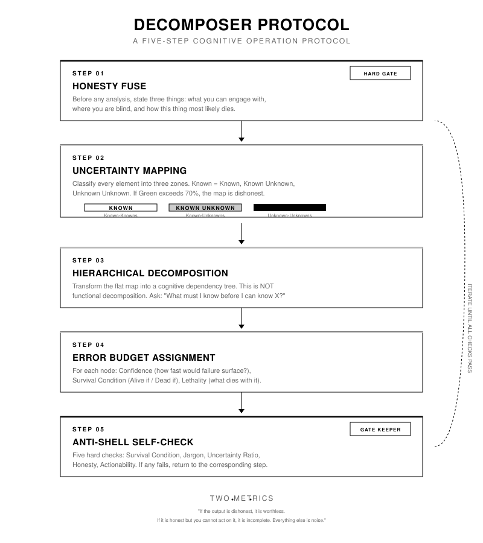

A five-step epistemic protocol for decomposing any large, ambiguous goal into an actionable uncertainty map. Domain-agnostic. No AI required.
Large language models, when asked to produce a plan for an ambiguous goal, generate output that has the structure of understanding without its substance. We call this a shell: a module list that mimics the shape of a plan. "User management. Payment system. Recommendation engine." It looks complete. It is not.
The shell problem arises from a fundamental mismatch between the model's training objective (plausible next-token prediction) and the user's epistemic need (identification of unknown unknowns). The model produces a plan that is syntactically coherent but epistemically hollow. The missing information is not absent by design; it is invisible to the model because the model has never encountered the specific failure mode.
The shell looks like progress. It feels like clarity. But the moment you try to act on it, you hit a wall that was invisible in the plan. The plan did not warn you because the plan never saw the wall.
This is not a failure of intelligence. It is a failure of epistemic structure. The standard planning format does not enforce the identification of what is not known. The Decomposer Protocol exists to correct this structural gap.
The fundamental unit of progress is not a feature, a module, or a milestone. It is the conversion of one unknown unknown into a known unknown.
The protocol is a transferable, domain-agnostic procedure. It runs in the human mind, on a whiteboard, or in an AI-assisted conversation. The AI skill is a convenience, not a requirement. The core insight is that plans fail not because of poor execution, but because of unexamined epistemic dependencies.

Before any analysis, the executor must state three declarations: (1) what they can actually engage with given the information provided, (2) specific statements about where they are blind, and (3) the single most probable collapse mode of the undertaking. The first honest act is refusing premature reassurance. No module lists, no feature breakdowns, no solution proposals, no false comfort of any kind. If the user reacts negatively to this step, the standard response is to explain that the first honest act is refusing premature reassurance. If the user insists on a standard plan, exit the protocol.
Classify every identifiable element into one of three zones. Green (Known-Known): could act on this right now and be confident the action is correct. Yellow (Known-Unknown): know a question exists but cannot answer it yet. Red (Unknown-Unknown): cannot even formulate the question. The 70% Rule is an empirical heuristic: if Green exceeds 70% of all mapped elements, the mapping is dishonest and must be redone from Step 1. Each element must pass the quick test: "Could I write down the next action for this right now, and be confident it is correct?" Yes = Green. I know what to figure out but have not = Yellow. Not even sure what question to ask = Red.
Transform the flat uncertainty map into a cognitive dependency tree. This is epistemic decomposition, not functional decomposition. The critical distinction: functional decomposition asks "What are the parts?" while cognitive decomposition asks "What do I need to know first?" For each pair of elements (A, B): if A remains unknown, can B still be meaningfully addressed? If no, A is a dependency of B. Each element receives three attributes: (1) Survival Condition: what must be true for this to survive, (2) Lethality: if this dies, what else dies with it, (3) Persistence: can this remain unresolved forever and the project still partially survive? Nodes are classified as Executable (survival conditions met), Pending Validation (know what information would resolve this), or Blind Zone (cannot formulate what "resolved" looks like).
Every node receives three attributes. Confidence: how fast would failure surface? High (hours/days), Medium (weeks), Low (months), or Zero (guessing). Survival Condition: a falsifiable pair of criteria. Lethality: a specific list of downstream nodes that die if this node dies. A hard constraint applies: a node with "High" confidence but no written survival condition is automatically downgraded to "Low." No exceptions. This ensures that confidence is grounded in testable criteria, not intuition.
Five hard checks. Check 1 (Survival Condition): every node must have an "Alive if" / "Dead if" pair. Check 2 (Jargon): output must be free of phrases that consume space without creating knowledge (e.g., "leverage best practices", "robust architecture"). Check 3 (Uncertainty Ratio): Yellow + Red must be at least 30% of all nodes; if below, the protocol is producing shells. Check 4 (Honesty): there must be at least one explicit, unhidden "I don't know" in the output. Check 5 (Actionability): the first concrete step must be identifiable in one sentence. If any check fails, return to the corresponding step. Repeat until all pass.
The following table contrasts a standard AI-generated plan with the equivalent Decomposer output for the same request. The difference is not in the modules named, but in the epistemic structure: the Decomposer output surfaces survival conditions, uncertainty zones, and dependency relationships that the standard plan suppresses.
The protocol evaluates its own output on two dimensions. These are not optimistic metrics; they are hard constraints. Any output that fails either metric is rejected and must be re-executed.
If the output is dishonest, it is worthless. The protocol enforces honesty structurally: Step 1 requires a confession of limits before any analysis, Step 2 requires uncertainty classification, and Step 5 requires an explicit "I don't know." Every node must have a survival condition. A plan without a survival condition is a shell, not a plan.
If the output is honest but you cannot act on it, it is incomplete. Every node must have a concrete first step. The protocol ends with a single sentence: "Do this first." The actionability check (Step 5, Check 5) ensures that the output is not merely a diagnosis but a guide to the next action.
If the best we can deliver is three honest nodes with survival conditions -- three pieces of the problem that are genuinely understood and genuinely actionable -- that is superior to a fifty-page plan where every module is a placeholder in disguise.
The fifty-page plan gives you the feeling of progress. The three honest nodes give you the fact of progress. The feeling evaporates on contact with reality. The fact survives.
The protocol is universal. Its rendering is contextual. Each adapter defines platform-specific invocation rules, formatting conventions, and output constraints. The core logic remains identical across all adapters.
AI-assistant conversation integration. The skill file is discovered automatically by TRAE.
Long-form essay structural template. Designed for public dissemination of the protocol.
Decision-friendly meeting brief. Optimized for synchronous group deliberation.
Pen-and-paper physical checklist. The protocol as a printable card.
No installation. No dependencies. No AI required. Read the protocol file, pick a problem, and run the five steps on a whiteboard. The output is an actionable uncertainty map where every node has a survival condition.
The protocol's claims about its own effectiveness are testable. Three experiment designs are defined in PROTOCOL.md and VALIDATION.md to validate whether the protocol works in your specific context. The protocol is currently a heuristic method, not a validated theory — its epistemic status is explicitly stated in MANIFEST.md.
A step-by-step beginner tutorial walks you through all five steps using a familiar scenario: "I want to open a small coffee shop." Each step includes a worked example, a blank template, and common mistakes. No prior experience with the protocol is required.
Step 1 — Write three declarations: what you can address, where you are blind, and how the thing most likely dies.
Step 2 — Classify every element as Green (known-known), Yellow (known-unknown), or Red (unknown-unknown).
Step 3 — Build a cognitive dependency tree. Ask "What do I need to know first?"
Step 4 — Assign confidence, survival conditions, and lethality to every node.
Step 5 — Run the Anti-Shell Self-Check. Repeat until all pass.